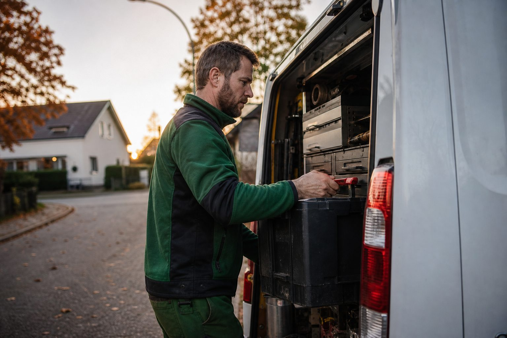

Jede zweite Kündigung kommt vom Mitarbeiter – und die meisten haben den nächsten Job schon
Der Anteil der Eigenkündigungen ist seit 2009 von 34 auf 52 Prozent gestiegen. Wer geht, geht selten ins Nichts: 84 Prozent haben eine neue Stelle in Aussicht. Was das für die Mitarbeiterbindung im GaLaBau heißt.

- 52 Prozent aller beendeten Arbeitsverhältnisse gehen inzwischen auf Kündigungen der Beschäftigten zurück (2009: 34 Prozent); 84 Prozent der Wechsler haben die nächste Stelle schon in Aussicht.
- Rund 36 Prozent der Beschäftigten waren 2025 wechselbereit – im Handwerk mit vielen Kleinbetrieben führt der Wechsel oft nur einen Ort weiter.
- Für Betriebe heißt das: das Gespräch vor der Kündigung führen, Verantwortung sichtbar machen und so auftreten, als müsste man seine Leute jedes Jahr neu gewinnen.
Wer im Garten- und Landschaftsbau eine Kündigung auf den Tisch bekommt, erlebt in den meisten Fällen keinen Rauswurf, sondern einen Abschied. Das Institut der deutschen Wirtschaft (IW) hat die Daten des Sozio-oekonomischen Panels ausgewertet: 2009 gingen 34 Prozent der beendeten Arbeitsverhältnisse auf eine Kündigung durch den Arbeitnehmer zurück, 2022 waren es 52 Prozent. Die Mehrheit der Trennungen geht heute vom Beschäftigten aus.
Sie gehen nicht ins Nichts
Die zweite Zahl aus derselben Auswertung ist für Betriebe die wichtigere: 84 Prozent derjenigen, die selbst kündigen, haben zum Zeitpunkt der Kündigung bereits eine neue Stelle in Aussicht oder einen Vertrag unterschrieben. Fachkräfte wechseln also nicht aus einer Laune heraus, sondern nachdem ein anderer Betrieb sie angesprochen hat. Der Wettbewerb um Landschaftsgärtner, Vorarbeiter und Bauleiter findet damit nicht auf dem Arbeitsamt statt, sondern im laufenden Arbeitsverhältnis.
Dazu passt die Wechselbereitschaftsstudie von XING und forsa: Rund 36 Prozent der Beschäftigten in Deutschland waren 2025 wechselbereit – ein Teil davon plant konkret, der größere Teil ist offen für Angebote, ohne aktiv zu suchen. In einem Handwerk mit hohem Anteil an Kleinbetrieben, in dem ein Wechsel oft nur einen Ort weiter führt, ist diese stille Reserve erheblich.
Was Betriebe daraus machen
Die Konsequenz ist unbequem: Ein Betrieb, der seine Leute halten will, muss so auftreten, als müsste er sie jedes Jahr neu gewinnen. Drei Punkte, die in Gesprächen mit Betriebsinhabern immer wieder den Unterschied machen:
- Das Gespräch vor der Kündigung führen. Wer einmal im Jahr mit jedem Mitarbeiter über Aufgaben, Verantwortung und Gehalt spricht, erfährt von Unzufriedenheit, bevor der Nachbarbetrieb es tut. Das Gespräch kostet eine Stunde; eine Neubesetzung kostet Monate.
- Verantwortung sichtbar machen. Vorarbeiter wechseln selten wegen 50 Cent pro Stunde, aber häufig, weil sie im neuen Betrieb eine Kolonne bekommen. Wer Entwicklungsschritte benennt – Kolonnenführung, Bauleitung, Meisterförderung –, nimmt dem Angebot von außen die Kraft.
- Die Rückkehr offenhalten. Ein Mitarbeiter, der im Guten geht, ist ein Kandidat für das übernächste Jahr. Betriebe, die ehemalige Mitarbeiter zum Sommerfest einladen, berichten regelmäßig von Rückkehrern.
Die Zahl, die im Betrieb fehlt
Die wenigsten Betriebe kennen ihre eigene Fluktuationsquote. Sie ist schnell berechnet: Abgänge im Jahr geteilt durch die durchschnittliche Beschäftigtenzahl. Ein Betrieb mit 22 Beschäftigten und drei Abgängen liegt bei knapp 14 Prozent – und weiß dann, ob er ein Bindungs- oder ein Gewinnungsproblem hat. Meist ist es das erste, das sich als das zweite verkleidet.
Quellen
- Institut der deutschen Wirtschaft (IW), Holger Schäfer: Arbeitnehmer kündigen zunehmend selbst, 22. April 2025 (Eigenkündigungen 34 % 2009 → 52 % 2022; 84 % mit neuer Stelle in Aussicht) – www.iwkoeln.de/studien/holger-schaefer-arbeitnehmer-kuendigen-zunehme...
- XING/forsa: Wechselbereitschaftsstudie 2025 (36 % wechselbereit), zitiert nach Hamburg Business / Der Betrieb – www.haufe.de/personal/hr-management/mitarbeiterbindung-wechselbereits...
Kommentare
Noch keine Kommentare. Schreiben Sie den ersten.

Das Jahresgespräch: Wie Betriebe im November klären, wer im März noch da ist
Wer geht, entscheidet das meist im Winter. Ein strukturiertes Gespräch vor der Saisonpause kostet eine Stunde pro Mitarbeiter – und ist das günstigste Instrument gegen Kündigungen im Frühjahr.

623.000 offene Stellen, 2,9 Millionen Arbeitslose: Was der Oktober für die Winterplanung bedeutet
Die Bundesagentur meldet für Oktober 2025 einen stabilen Arbeitsmarkt. Für GaLaBau-Betriebe beginnt jetzt das Zeitfenster, in dem sich Fachkräfte am ehesten bewegen – und in dem die wenigsten Betriebe suchen.

Jahresauftakt: 25 Prozent mehr Bewerbungen, 3 Prozent weniger Stellen
Das Indeed Hiring Lab hat den Jahreswechsel 2025/26 ausgewertet, die Bundesagentur den Januar. Beide Zahlenreihen erzählen dasselbe: Zu Jahresbeginn bewegen sich Fachkräfte – und die Betriebe, die dann sichtbar sind, profitieren.